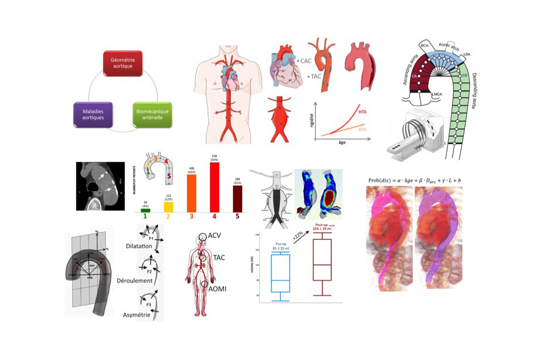
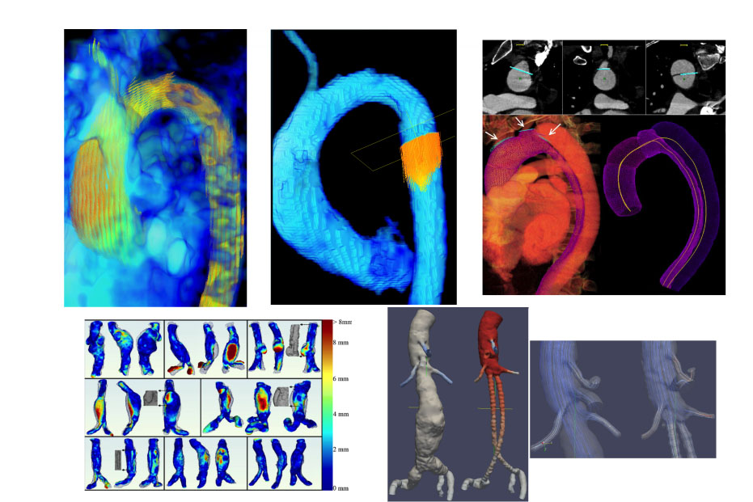
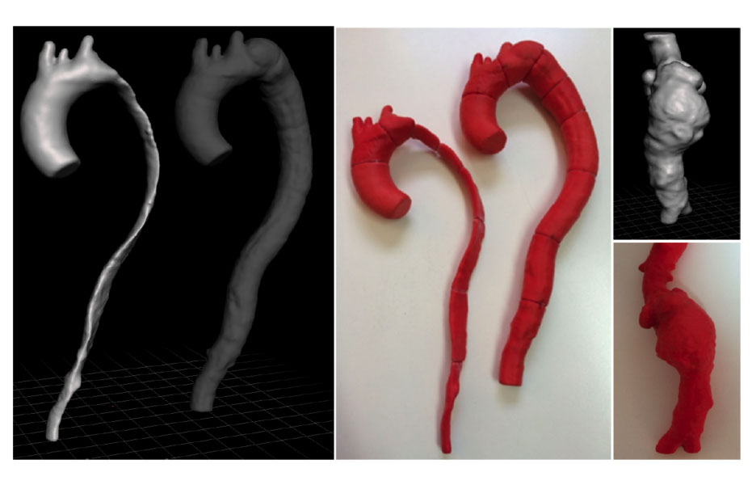

I'm a researcher with more than 15 years of experience in Biomedical Engineering topics in the cardiology domain. I lead my own team of biomedical engineers in the Favaloro University (Buenos Aires, Argentina). My major focus is on developing medical image processing tools to help physicians and patients to prevent and treat cardiovascular diseases. I speak, write and read in Spanish, English and French.
Université Paris Descartes (Medical School)
3 Years Thesis (pdf File)
Universidad de Buenos Aires (Engineering School)
5 Years Thesis (pdf File)
Universidad Favaloro (Biomedical School)
2 Years Thesis
Universidad Tecnológica Nacional
5 Years career
Favaloro University - CONICET (IMETTyB)
Favaloro and National Technologic Universities
With my team, we develop biomedical tools to help surgeons, radiologist and cardiologist to automate cardiac and vascular measurement using CT and MRI images.
Biomedical studies in patients
Animal instrumentation & tissue engineering
C++/C#/Assembler/Matlab
Statistics/SPSS/JMP/MedCalc
Digital Image Processing/CT/Echography/MRI
Arterial mechanics/Cardiovascular diseases
In-vivo & in-vitro experimentation
3D modelling/Printing/Simulation/

MAIN PUBLICATIONS

4D-Flow MRI and Computed Tomography

3D vascular analysis and printing
damian@craiem.com.ar
Universidad Favaloro
Solís 453
CP 1078
Buenos Aires, Argentina.
+54 11 4378-1132
ResearchGate
IMETTyB Favaloro-CONICET
My own Lab
© Copyrights Kelvin. All Rights Reserved